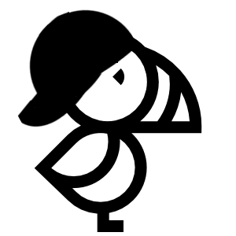

My name is Guillaume and I'm a Python engineer and a bird watcher. I'm constructing some webapps to have access bird informations easier. I saw Raphaël Nussbaumer work and decided to use it for Ecuadorian birders.